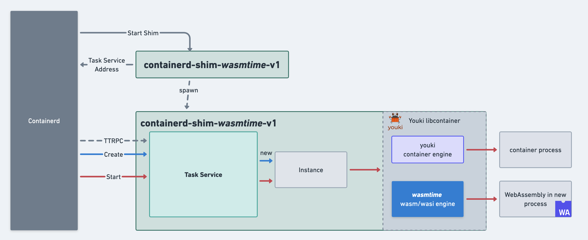
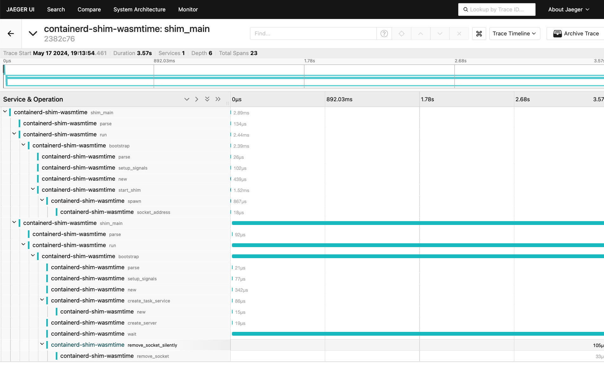

This is a project to facilitate running wasm workloads managed by containerd either directly (ie. through ctr) or as directed by Kubelet via the CRI plugin. It is intended to be a (rust) library that you can take and integrate with your wasm host. Included in the repository is a PoC for running a plain wasi host (ie. no extra host functions except to support wasi system calls).
Community
- If you haven’t joined the CNCF slack yet, you can do so here.
- Come join us on our slack channel #runwasi on the CNCF slack.
- Public Community Call on Tuesdays every other week at 9:00 AM PT: Zoom, Meeting Notes
See our Community Page for more ways to get involved.
Documentation
For comprehensive documentation, visit our Documentation Site.
For containerd-shim-wasm crate documentation, visit containerd-shim-wasm.
Quick Start
Installation
make build
sudo make install
For detailed installation instructions, see the Installation Guide.
Running an Example
# Pull the image
sudo ctr images pull ghcr.io/containerd/runwasi/wasi-demo-app:latest
# Run the example
sudo ctr run --rm --runtime=io.containerd.wasmtime.v1 ghcr.io/containerd/runwasi/wasi-demo-app:latest testwasm
For more examples and detailed usage, see the Demos.
Projects Using Runwasi
Check out these projects that build on top of runwasi:
Contributing
To begin contributing, please read our Contributing Guide.
Installation
This guide will help you install and set up Runwasi on your system.
Prerequisites
Before installing Runwasi, ensure you have the following prerequisites installed:
- Rust (stable)
- containerd
Additionally, check the contributing guide for detailed instructions on setting up your environment with all required dependencies.
Installation Methods
Option 1: Installing Prebuilt Binaries
The easiest way to get started is to download prebuilt binaries from the GitHub releases page.
-
Navigate to the releases page
-
Download the appropriate shim for your preferred WebAssembly runtime:
containerd-shim-wasmtime-v1- for Wasmtime runtimecontainerd-shim-wasmedge-v1- for WasmEdge runtimecontainerd-shim-wasmer-v1- for Wasmer runtimecontainerd-shim-wamr-v1- for WebAssembly Micro Runtime (WAMR)
-
Make the binary executable and move it to your PATH:
chmod +x containerd-shim-wasmtime-v1
sudo install containerd-shim-wasmtime-v1 /usr/local/bin/
- Verify the binary signature (recommended):
# Verify using cosign
cosign verify-blob \
--signature containerd-shim-wasmtime-v1.sig \
--certificate containerd-shim-wasmtime-v1.pem \
--certificate-identity https://github.com/containerd/runwasi/.github/workflows/action-build.yml@refs/heads/main \
--certificate-oidc-issuer https://token.actions.githubusercontent.com \
containerd-shim-wasmtime-v1
Option 2: Building from Source
To build and install Runwasi from source:
- Clone the repository:
git clone https://github.com/containerd/runwasi.git
cd runwasi
- Build the shim for your preferred runtime:
make build
Note:
make buildwill only build shims for all runtimes. You can specify which runtime to build withmake build-wasmtime,make build-wasmer,make build-wasmedge,make build-wamretc.
- Install the binary:
sudo make install
The make install command copies the binary to $PATH
Testing Your Installation
After installation, you can test your setup by pulling and running a test image:
- Pull the test image:
sudo ctr images pull ghcr.io/containerd/runwasi/wasi-demo-app:latest
- Run a test container:
sudo ctr run --rm --runtime=io.containerd.wasmtime.v1 ghcr.io/containerd/runwasi/wasi-demo-app:latest testwasm
You should see output from the demo application.
Next Steps
Now that you have runwasi shims installed, you can proceed to the Demos to learn how to run WebAssembly workloads with Runwasi.
Demos
This page provides various demonstrations of running WebAssembly workloads with Runwasi.
Prerequisites
Before running these demos, make sure you have:
- Installed the Runwasi shims as described in the Installation Guide
- Installed containerd and its CLI tool
ctr
Demo 1: Using Container Image with Wasm Module
This demo runs a WebAssembly module from a regular OCI container image that contains the Wasm module in its filesystem.
Setup
Pull the test image:
make pull-app
# or
sudo ctr images pull ghcr.io/containerd/runwasi/wasi-demo-app:latest
Running the Demo
Run the image with your preferred runtime:
sudo ctr run --rm --runtime=io.containerd.wasmtime.v1 ghcr.io/containerd/runwasi/wasi-demo-app:latest testwasm
You can also specify a particular command:
sudo ctr run --rm --runtime=io.containerd.wasmtime.v1 ghcr.io/containerd/runwasi/wasi-demo-app:latest testwasm /wasi-demo-app.wasm echo 'hello'
The output should look like:
This is a song that never ends.
Yes, it goes on and on my friends.
Some people started singing it not knowing what it was,
So they'll continue singing it forever just because...
To kill the process, run in another terminal:
sudo ctr task kill -s SIGKILL testwasm
The test binary supports various commands for different types of functionality. Check crates/wasi-demo-app/src/main.rs to explore more options.
Demo 2: Using OCI Images with Custom WASM Layers
This demo showcases a more advanced approach using OCI Images with custom WASM layers. This approach doesn’t include the Wasm module in the container’s filesystem but instead stores it as a separate layer in the OCI image. This provides better cross-platform support and de-duplication in the Containerd content store.
Note: This requires containerd 2.0+, 1.7.7+ or 1.6.25+. If you don’t have these patches for both
containerdandctr, you’ll encounter an error message likemismatched image rootfs and manifest layers. Latest versions of k3s and kind have the necessary containerd versions.
Setup
Pull the OCI image with WASM layers:
make pull
# or
sudo ctr images pull ghcr.io/containerd/runwasi/wasi-demo-oci:latest
Running the Demo
Run the image with your preferred runtime:
sudo ctr run --rm --runtime=io.containerd.wasmtime.v1 ghcr.io/containerd/runwasi/wasi-demo-oci:latest testwasmoci wasi-demo-oci.wasm echo 'hello'
Expected output:
hello
exiting
To learn more about this approach, check the design document.
Demo 3: Using Wasm OCI Artifact
The CNCF tag-runtime wasm working group has defined an OCI Artifact format for Wasm. This new artifact type enables usage across projects beyond just Runwasi.
make test/k8s-oci-wasmtime
Note: We use a Kubernetes cluster to run this demo since containerd’s ctr has a bug that results in:
unknown image config media type application/vnd.wasm.config.v0+json
WASI/HTTP Demo for Wasmtime Shim
The wasmtime-shim includes support for the WASI/HTTP specification. For details on running HTTP-based WebAssembly modules, see the wasmtime-shim documentation.
WASI/HTTP
The wasmtime-shim supports wasi/http and can be used to serve requests from a wasi/http proxy component. The
shim code will try to detect components targeting http/proxy, and start up a hyper server to listen for incoming
connections, forwarding the requests to the WASM component for handling.
This behavior is very similar to what the wasmtime serve command currently offers. The server task is terminated
upon receiving a terminate or interrupt signal in the container.
This is particularly useful on Wasm-first platforms to enable instance-per-request isolation:
Each Wasm instance serves only one HTTP request, and then goes away.
This improves security and bug mitigation: the blast radius of an exploit or guest-runtime bug is limited to a single request, and cannot access data from other users or other requests by the same user. 3
The server can be customized using environment variables passed to the RuntimeContext:
WASMTIME_HTTP_PROXY_SOCKET_ADDR: Defines the socket address to bind to (default:0.0.0.0:8080).WASMTIME_HTTP_PROXY_BACKLOG: Defines the maximum number of pending connections in the queue (default:100).
Using Different WebAssembly Runtimes
All demos can be run using any of the available Runwasi shims by replacing wasmtime with the runtime of your choice:
- Wasmtime:
io.containerd.wasmtime.v1 - WasmEdge:
io.containerd.wasmedge.v1 - Wasmer:
io.containerd.wasmer.v1 - WAMR:
io.containerd.wamr.v1
For example:
sudo ctr run --rm --runtime=io.containerd.wasmedge.v1 ghcr.io/containerd/runwasi/wasi-demo-app:latest testwasm
Next Steps
- Explore running WebAssembly workloads on Kubernetes in the Quickstart with Kubernetes guide
- Learn about the Architecture of Runwasi
- Check out Contributing to get involved with the project
Quickstart with Kubernetes
This guide will walk you through running WebAssembly workloads on Kubernetes using Runwasi.
Prerequisites
Before getting started, ensure you have:
- Installed Runwasi shims as described in the Installation Guide
- Basic familiarity with Kubernetes concepts
- Access to a Kubernetes cluster or the ability to create one using Kind or k3s
Setting Up Kubernetes for WebAssembly
Runwasi enables WebAssembly workloads to run on Kubernetes by providing a containerd shim that interfaces with the Kubernetes container runtime interface (CRI). You can use either Kind or k3s for a local development environment.
Option 1: Using Kind
Kind (Kubernetes IN Docker) is a tool for running local Kubernetes clusters using Docker containers as nodes.
- Install and configure dependencies:
curl -Lo ./kind https://kind.sigs.k8s.io/dl/v0.27.0/kind-linux-amd64
chmod +x ./kind
sudo mv ./kind /usr/local/bin/
# Build and install the Wasmtime shim if you haven't already
make build-wasmtime
sudo make install-wasmtime
- Create a Kind configuration file:
# kind-config.yaml
kind: Cluster
apiVersion: kind.x-k8s.io/v1alpha4
name: runwasi-cluster
nodes:
- role: control-plane
extraMounts:
- hostPath: /usr/local/bin/containerd-shim-wasmtime-v1
containerPath: /usr/local/bin/containerd-shim-wasmtime-v1
- Create and configure the cluster:
kind create cluster --name runwasi-cluster --config kind-config.yaml
kubectl cluster-info --context kind-runwasi-cluster
cat << EOF | docker exec -i runwasi-cluster-control-plane tee /etc/containerd/config.toml
[plugins."io.containerd.cri.v1.runtime".containerd.runtimes.wasm]
runtime_type = "io.containerd.wasmtime.v1"
EOF
docker exec runwasi-cluster-control-plane systemctl restart containerd
Option 2: Using k3s
k3s is a lightweight, certified Kubernetes distribution designed for edge, IoT, CI, and development use cases.
- Install k3s and build the shim:
curl -sfL https://get.k3s.io | sh -
# Build and install the Wasmtime shim if you haven't already
make build-wasmtime
sudo make install-wasmtime
- Configure k3s to use the WebAssembly runtime:
sudo mkdir -p /var/lib/rancher/k3s/agent/etc/containerd/
cat << EOF | sudo tee -a /var/lib/rancher/k3s/agent/etc/containerd/config.toml.tmpl
[plugins."io.containerd.cri.v1.runtime".containerd.runtimes.wasm]
runtime_type = "io.containerd.wasmtime.v1"
EOF
sudo systemctl restart k3s
Deploying WebAssembly Workloads
After setting up your Kubernetes cluster with Runwasi, you can deploy WebAssembly workloads.
- Create a deployment YAML file:
# deploy.yaml
apiVersion: node.k8s.io/v1
kind: RuntimeClass
metadata:
name: wasm
handler: wasm
---
apiVersion: apps/v1
kind: Deployment
metadata:
name: wasi-demo
spec:
replicas: 1
selector:
matchLabels:
app: wasi-demo
template:
metadata:
labels:
app: wasi-demo
spec:
runtimeClassName: wasm
containers:
- name: demo
image: ghcr.io/containerd/runwasi/wasi-demo-app:latest
- Apply the deployment with Kind:
kubectl --context kind-runwasi-cluster apply -f deploy.yaml
Or with k3s:
sudo k3s kubectl apply -f deploy.yaml
-
Check the status of your deployment:
With Kind:
kubectl --context kind-runwasi-cluster get pods
kubectl --context kind-runwasi-cluster logs -l app=wasi-demo
With k3s:
sudo k3s kubectl get pods
sudo k3s kubectl logs -l app=wasi-demo
You should see output like:
This is a song that never ends.
Yes, it goes on and on my friends.
Some people started singing it not knowing what it was,
So they'll continue singing it forever just because...
Using Other WebAssembly Runtimes
You can use different WebAssembly runtimes by changing the runtime type in your containerd configuration:
- For WasmEdge:
runtime_type = "io.containerd.wasmedge.v1"
- For Wasmer:
runtime_type = "io.containerd.wasmer.v1"
Make sure you’ve installed the corresponding shim binary.
Cleaning Up
To remove your test deployment:
With Kind:
kubectl --context kind-runwasi-cluster delete -f deploy.yaml
kind delete cluster --name runwasi-cluster
With k3s:
sudo k3s kubectl delete -f deploy.yaml
# Optionally uninstall k3s
/usr/local/bin/k3s-uninstall.sh
Next Steps
Now that you’ve set up Kubernetes to run WebAssembly workloads:
- Learn about OCI Integration for container images
- Explore Architecture Overview to understand how Runwasi works
- Check out OpenTelemetry Integration for monitoring your WebAssembly workloads
Windows: Getting Started
Currently, runwasi depends on a Linux environment (i.e., because it has to wire up networking and rootfs mounts). Therefore, to run it on Windows, we recommend utilizing the Windows Subsystem for Linux (WSL).
To get started with WSL, see this.
Once you have your WSL environment set and you have cloned the runwasi repository, you will need to install Docker and the Docker Buildx plugin.
To install Docker and the Docker Buildx Plugin, see this to find specific installation instructions for your WSL distro.
Before proceeding, it’s also recommended to install Docker Desktop on Windows and run it once.
To finish off installing pre-requisites, install Rust following this.
After following these steps and navigating to the runwasi directory in your terminal:
- run
make build, - run
make install, - run
make pull-app.
After this, you can execute an example, like: ctr run --rm --runtime=io.containerd.wasmtime.v1 ghcr.io/containerd/runwasi/wasi-demo-app:latest testwasm.
To kill the process from the example, you can run:
ctr task kill -s SIGKILL testwasm.
Building and developing on Windows
You need to install wasmedge, llvm and make. This can be done using winget, choco or manually. (note as of writing this winget doesn’t have the latest package and will builds will fail). See .github/scripts/build-windows.sh for an example.
Once you have those dependencies you will need to set env:
$env:WASMEDGE_LIB_DIR="C:\Program Files\WasmEdge\lib"
$env:WASMEDGE_INCLUDE_DIR="C:\Program Files\WasmEdge\include"
Then you can run:
make build
Using VS code
If you are using VS Code for development you can use the following settings.json in the .vscode folder of the project:
{
"rust-analyzer.cargo.noDefaultFeatures": true,
"rust-analyzer.cargo.extraEnv": {
"WASMEDGE_LIB_DIR": "C:\\Program Files\\WasmEdge\\lib",
"WASMEDGE_INCLUDE_DIR": "C:\\Program Files\\WasmEdge\\include"
}
}
Architecture Overview
This document provides an overview of the Runwasi architecture and how it integrates with the container ecosystem.
High-Level Architecture
Runwasi is designed as a library that can be integrated with WebAssembly runtimes to enable them to be used with containerd. The following diagram illustrates the high-level architecture:

Project Structure
The Runwasi project is organized into several components:
- containerd-shim-wasm - A higher level library that is used by WebAssembly runtimes to create shims. Most of the WebAssembly-specific shared code lives here.
- containerd-shim-wasm-test-modules - Library with WebAssembly test modules used in the testing framework.
- containerd-shim-<runtime> - Shim reference implementation for selected runtimes (wasmtime, wasmedge, wasmer, wamr, etc.). These produce binaries that are the shims which containerd can communicate with.
- containerd-shimkit - A lower level, opinionated library providing a API for building containerd shims. It serves as the building block of
containerd-shim-wasm. - oci-tar-builder - Library and executable that helps build OCI tar files that follow the
wasm-ocispec. - wasi-demo-app - WebAssembly application that is used for demos and testing.
Components
Containerd Shim
The Containerd “shim” is a daemon process that serves the Task Service API. It listens on a socket to receive ttrpc requests from Containerd, allowing for lifecycle management for containers (create, start, stop, etc.).
Runwasi Libraries
The core of Runwasi is the containerd-wasm-shim library crate.
The containerd-shim-wasm crate provides a high-level API for building WebAssembly shims, mainly the Engine trait. The Engine trait has the following features:
- Shim Implementation: It implements the containerd shim v2 API to facilitate communication between containerd and the WebAssembly runtime. This is done through the
containerd-shimkit’sInstancetrait (more on this trait below). - Wasm OCI Integration: Transparent handling of the wasm-oci spec.
- Wasm-specific Features: Support for Wasm module or component validation and precompilation.
The Engine trait is built on top of the containerd-shimkit’s Instance trait. The Instance trait provides a low-level API for implementing containerd shims. It supports Linux, MacOS, and Windows and provides observability and tracing for monitoring shim operations. However, it also has limitations:
- It is not stable, and considered an implementation detail for
containerd-shim-wasm - No precompilation out-of-the-box
- Does not support for native containers out-of-the-box
- Requires manual handling of cgroup setup
Engine Types
Runwasi supports two types of engines:
- WebAssembly / WASI Engine: Executes WebAssembly modules or components in a containerized process.
- Youki Container Engine: Manages OCI-compliant native Linux container workloads. It offers functionality analogous to runc, including lifecycle operations for containers.
Runwasi automatically detects the type of workload and decides which of the two modes to execute. This allows Runwasi shims to run WebAssembly workloads side-by-side with container workloads.
WebAssembly Runtime Integration
Runwasi provides two approaches for integrating WebAssembly runtimes, depending on how much control you need over the container lifecycle and the level of sandboxing you want to provide:
-
containerd_shim_wasm::EngineTrait: A simpler interface for implementing a WebAssembly runtime that runs single containers. This approach uses Youki’slibcontainercrate to manage the container lifecycle (creating, starting, and deleting containers), and Youki handles container sandboxing for you. TheEnginetrait provides several methods you can implement:name()- Returns the name of the engine (required)run_wasi()- Executes the WebAssembly module (required)can_handle()- Validates that the runtime can run the container (optional, checks Wasm file headers by default)supported_layers_types()- Returns supported OCI layer types (optional)precompile()- Allows precompilation of WebAssembly modules (optional)can_precompile()- Indicates if the runtime supports precompilation (optional)
-
containerd_shimkit::sandbox::InstanceTrait: A more flexible but complex interface for implementing a WebAssembly runtime that needs direct control over the container lifecycle. This approach gives you full control over how containers are created, started, and managed. TheInstancetrait requires implementing methods like:new()- Creates a new instancestart()- Starts the instancekill()- Sends signals to the instancedelete()- Cleans up the instancewait_timeout()- Waits for the instance to exit
The choice between these approaches depends on your specific use case. Most WebAssembly runtimes should use the Engine trait for simplicity, while more complex scenarios requiring custom container management would use the Instance trait directly.
Process Model
[TODO] Process Model section to be completed.
Integration with Container Ecosystem
For more details on the OCI integration, see the OCI Decision Flow document.
OCI pre-compilation
The OCI images layers are loaded from containerd. If the runtime supports pre-compilation the images will be precompiled and cached using the containerd content store.
graph TD
start[Task new]
imgconfig[Load image config from containerd]
iswasm{Arch==wasm?}
alreadycompiled{Does image label for shim runtime version exist? runwasi.io/precompiled/runtime/version}
startcontainer[Create Container]
precompiledenabled{Is precompiling enabled in shim?}
precompiledenabled2{Is precompiling enabled in shim?}
fetchcache[Fetch cached precompiled layer from containerd content store]
precompile[Precompile using wasm runtime]
loadoci[Load OCI layers from containerd]
storecache[Store precompiled layer in containerd content store]
start --> imgconfig --> iswasm
iswasm -- yes --> precompiledenabled
iswasm -- no. wasm will be loaded from file inside image --> startcontainer
precompiledenabled -- yes --> alreadycompiled
precompiledenabled -- no --> loadoci --> precompiledenabled2
alreadycompiled -- yes --> fetchcache --> startcontainer
alreadycompiled -- no --> loadoci
precompiledenabled2 -- yes --> precompile --> storecache --> startcontainer
precompiledenabled2 -- no --> startcontainer
Once a wasm module or component is pre-compiled it will remain in the containerd content store until the original image is removed from containerd. There is a small disk overhead associated with this but it reduces the complexity of managing stored versions during upgrades.
To view the images in containerd that have associated pre-compilations:
sudo ctr i ls | grep "runwasi.io"
ghcr.io/containerd/runwasi/wasi-demo-oci:latest application/vnd.oci.image.manifest.v1+json
sha256:60fccd77070dfeb682a1ebc742e9d677fc452b30a6b99188b081c968992394ce 2.4 MiB wasi/wasm
runwasi.io/precompiled/wasmtime/0.3.1=sha256:b36753ab5a46f26f6bedb81b8a7b489cede8fc7386f1398706782e225fd0a98e
# query for the sha in the label
sudo ctr content ls | grep "b36753ab5a46f26f6bedb81b8a7b489cede8fc7386f139870"
sha256:60fccd77070dfeb682a1ebc742e9d677fc452b30a6b99188b081c968992394ce 561B 2 months containerd.io/gc.ref.content.0=sha256:a3c18cd551d54d3cfbf67acc9e8f7ef5761e76827fe7c1ae163fca0193be88b3,containerd.io/gc.ref.content.config=sha256:85b7f2b562fe8665ec9d9e6d47ab0b24e2315627f5f558d298475c4038d71e8b,containerd.io/gc.ref.content.precompile=sha256:b36753ab5a46f26f6bedb81b8a7b489cede8fc7386f1398706782e225fd0a98e
sha256:b36753ab5a46f26f6bedb81b8a7b489cede8fc7386f1398706782e225fd0a98e 626.4kB 3 days runwasi.io/precompiled=sha256:60fccd77070dfeb682a1ebc742e9d677fc452b30a6b99188b081c968992394ce
Contributors’ Guide
This guide will help familiarize contributors to the containerd/runwasi repository.
Prerequisite
First read the containerd project’s general guidelines around contribution which apply to all containerd projects.
Setting up your local environment
At a minimum, the Rust toolchain. When using rustup the correct toolchain version is picked up from the rust-toolchain.toml file so you don’t need to worry about the version.
curl --proto '=https' --tlsv1.2 -sSf https://sh.rustup.rs | sh
There are a few helper scripts that will install and configure required packages based on your OS. The end-to-end tests require a static binary, so installing cross-rs is recommended.
If on ubuntu/debian you can use the following script. Refer to youki’s documentation for other systems.
./scripts/setup-linux.sh
If on Windows use (use git BASH terminal which has shell emulator)
./scripts/setup-windows.sh
If you choose to always build with cross, you don’t need any of these requirements above as they will be provided via the cross container. This does require docker or podman. Refer to the cross getting started page for more details.
Install cross:
scripts/setup-cross.sh
Project structure and architecture
For a detailed overview of the Runwasi structure and architecture, please refer to the Architecture Documentation.
The documentation covers:
- High-level structure of Runwasi
- Component descriptions and interactions
- WebAssembly runtime integration approaches
- Process model and container ecosystem integration
Building the project
To build all the shims in this repository:
make build
To build a shim for specific runtime (wasmtime, wasmer, wasmedge, wamr, etc):
make build-<runtime>
By default the runtimes will build for your current OS and architecture. If you want to build for a specific OS and architecture you can specify TARGET, where it matches a target in “Cross.toml”. If your target doesn’t match your host OS and architecture Cross will be used. As an example will build a static binary:
TARGET=x86_64-unknown-linux-musl make build
Running tests
Unit tests
Unit tests are run via make test or for a specific runtime make test-<runtime>. On linux the tests will run using sudo. This is configured in the runner field in “.cargo/config.toml”
You should see some output like:
make test
running 3 tests
test instance::tests::test_maybe_open_stdio ... ok
test instance::wasitest::test_delete_after_create ... ok
test instance::wasitest::test_wasi ... ok
Run individual test via cargo adding RUST_LOG=trace (adjust the level of logging as needed) to see shim output. Also adjust the test name as needed.
RUST_LOG=DEBUG cargo test --package containerd-shim-wasmtime --lib -- wasmtime_tests::test_hello_world --exact --nocapture
End to End tests
The e2e test run on k3s and kind. A test image is built using oci-tar-builder and is loaded onto the clusters. This test image is not pushed to an external registry so be sure to use the Makefile targets to build the image and load it on the cluster.
The deployment file in test/k8s/Dockerfile is run and verified that it deploys and runs successfully. To execute the e2e tests in either kind or k3s:
make test/k8s-<runtime> # runs using kind
make test/k3s-<runtime>
OCI Wasm image requires containerd 1.7.7+ and can be tested with:
make test/k8s-oci-<runtime>
Building the test image
This builds a wasm application and packages it in an OCI format:
make test-image
Code style
We use nightly rustfmt and clippy for most linting rules. They are installed automatically with rustup. Use the check makefile target to run these tools and verify your code matches the expected style.
make check
You can auto-fix most styles using
make fix
Adding new features
Most features will likely have most of the code in the containerd-shim-wasm project and a few runtime specific additions to each runtime shim. The general expectation is that the feature should be added to all runtimes. We will evaluate on a case by case basis exceptions, where runtimes may not be able to support a given feature or requires changes that make it hard to review. In those cases we it may make sense to implement in follow up PR’s for other runtimes.
A tip for developing a new feature is to implement it and test it with one runtime you are familiar with then add it to all the runtimes. This makes it easier to test and iterate before making changes across all the runtimes.
Any changes made to the containerd-shim-wasm crate needs to be documented in the CHANGELOG.md file following the Keep a Changelog format.
Adding new shims
We welcome new shims, though you can also host them in your own repositories as well and use the coantainerd-shim-wasm crate. We recognize that the project is moving fast and having them in this repository can reduce the need for changes as well for discoverability.
Please open an issue before submitting a PR for discussion to make sure it is a good fit. As a general rule, we want shims to be adopting WASI spec (this is after all called runwasi :-)). In the future we may require shims in the repository to pass WASI compliance tests when the standards mature more. See https://github.com/containerd/runwasi/issues/338 for more discussion.
Since we are not experts in every runtime we also need a commitment from the runtime owners to contribute to maintenance of the shim.
Removing Shims
This is a fast moving space, with lots of innovation happening and some shims may eventually need to be removed.
A Shim implementation maybe subject to removal if:
- If a shim runtime has not been maintained for 6 months it will be subject to removal.
- If required changes to the runtime can’t be merged or not supported by runtime maintainers.
- If it falls behind in new features added to the
containerd-shim-wasmdue to lack of maintenance
Before removal:
- We will create an issue in the repository, pinned to the top.
- Send notification in our slack channel
- make best effort to contact the maintainers (agreed to when adding the shim)
After 1 month of the issue being up, if no maintainer is found we will remove the shim from the project.
In the case where immediate actions are required we may remove a shim from the CI signal to unblock progress on a feature or bug. This will be done on a case by case basis when needing to resolve an issue immediately. We will open an issue to track the removal from CI and if we are not able to resolved (or make progress on resolving) with in the next two weeks we will start the steps for removal.
Getting in touch
There is a lot going on in the project. If you get lost, stop by our slack and ask questions!
Documentation website
This project uses the mdBook tool to generate a documentation website from markdown files. The website is hosted on GitHub Pages and is available at the following URL: https://runwasi.dev/.
Building the documentation
To build the documentation, you need to have the mdbook tool installed. You
can install it using the following command:
cargo install mdbook
Once you have mdbook installed, you can build the documentation by running the
following command:
mdbook build
This will generate the documentation in the book directory. You can verify
locally by running:
mdbook serve
which will start a local web server at http://localhost:3000 where you can
view the documentation.
Contributing
If you would like to contribute to the documentation, you can do so by editing
the markdown files in the src directory. Once you have made your changes, you
can build the documentation as described above and verify that your changes are
correct.
If you are happy with your changes, you can submit a pull request to the main
branch of the repository. Once your pull request is merged, the changes will be
automatically published to the documentation website.
Deploying the documentation
The documentation is automatically deployed to GitHub Pages when changes are
merged to the main branch.
To deploy the documentation, the following github actions are used:
- actions-mdbook for building the documentation.
- actions-gh-pages for deploying the documentation to GitHub Pages.
Release Process
This document describes the steps to release a new version of the crate or wasi-demo-app images.
Table of Contents
Crate Release Process
Overview
To create a new release, either run the release.yml workflow as a workload_dispatch trigger through the GitHub UI, or via the following command substituting the proper values for crate and version.
gh workflow run release.yml -f dry_run=true -f crate=containerd-shim-wasm -f version=0.4.0
Input Values for Release.yml
crate:[string] the name of the crate within the runwasi project. It should be a directory under./crates.version:[string] the version of the crate to stamp, tag, and release (e.g., 1.0.0, 0.6.0-rc1)dry_run:[boolean] a flag that causes the workflow to run all step except ones that would tag or push artifacts.
Crate Release Sequence
Must release the creates in this order due to dependencies:
containerd-shimkitcontainerd-shim-wasm- All runtime-related crates.
Release Steps
- Open a PR to bump crate versions and dependency versions in
Cargo.tomlfor that crate, and change the “Unreleased” section in theCHANGELOG.mdto the new version. - PR can be merged after 2 LGTMs
- Run the release workflow for the dependent crate. (e.g.
containerd-shim-wasm/v0.2.0wherecrate=containerd-shim-wasmandversion=0.2.0) - Wait for the release workflow to complete
- Manually verify the release on crates.io and on the GitHub releases page (See Verify signing section for more details on verifying the release on GitHub releases page.)
- If this is the first time publishing this crate, see the First release of a crate section.
Note: If step 1 and/or 2 is skipped, the release workflow will fail because the version in the Cargo.toml will not match the tag.
For step 5, some crates have binaries, such as the containerd-shim-wasmtime crate. These binaries are built as part of the release workflow and uploaded to the GitHub release page. You can download the binaries from the release page and verify that they work as expected.
Local Development vs. Release
Locally, crates reference local paths. During release, they target published versions.
Use both path and version fields in the workspace Cargo.toml:
e.g.
containerd-shim-wasm = { path = "crates/containerd-shim-wasm", version = "0.4.0" }
Verify signing
The release pipeline uses cosign to sign the release blobs, if any. It uses Github’s OIDC token to authenticate with Sigstore to prove identity and outputs a .bundle file, which contains a signature and a key. This file can be verified using cosign verify-blob command, providing the workflow tag and Github as the issuer. The full command looks like this (e.g. wasmtime shim):
cosign verify-blob --bundle containerd-shim-wasmtime-v1.bundle \
--certificate-identity https://github.com/containerd/runwasi/.github/workflows/release.yml@refs/tags/containerd-shim-wasmtime/<tag> \
--certificate-oidc-issuer https://token.actions.githubusercontent.com \
containerd-shim-wasmtime-v1
In the Github release page, please provide the above command in the instructions for the consumer to verify the release.
First time release of a crate
If the crate has never been published to crates.io before then ownership of the crate will need to be configured.
- You should pass
initial_release=trueto the release workflow to skip the ownership step. - The containerd/runwasi-committers team will need to be added as an owner of the crate.
The release workflow will automatically invite the person who triggered the workflow run to be an owner of the crate. That person will need to accept the invite to be an owner of the crate and then manually add the containerd/runwasi-committers team as an owner of the crate.
cargo owner --add github:containerd:runwasi-committers <crate-name>
This assumes you’ve already done cargo login with your personal account.
Alternatively, the cargo cli does support setting the token via an environment variable, CARGO_REGISTRY_TOKEN or as a CLI flag.
Now all members of the containerd/runwasi-committers team will have access to manage the crate (after they have accepted the invite to the crate).
Release workflow summary
The workflow performs the following steps:
- Verifies inputs
- Verifies ability to push crates
- Updates the version of the crate to the version specified in the workflow input
- Build the crate to be released (determined by the tag), including any artifacts (e.g., associated binaries)
- Run the tests for that crate (and only that crate!)
- Publishes to the crates.io
- Tags the repository for the release
- Creates a GitHub release for that crate (attaching any artifacts)
The workflow utilizes a bot account (@containerd-runwasi-release-bot) to publish the crate to crates.io. The bot account is only used to get a limited-scope API token to publish the crate on crates.io. The token is stored as a secret in the repository and is only used by the release workflow.
wasi-demo-app Release Process
Overview
To release a new version of the wasi-demo-app images, run the release-wasi-demo-app.yml workflow using the following command, substituting the correct version:
gh workflow run release-wasi-demo-app.yml -f dry_run=false -f version=0.1.0
Verify signing
To verify the signature of the release, run the following command:
cosign verify ghcr.io/containerd/runwasi/wasi-demo-app:0.1.0 --certificate-identity https://github.com/containerd/runwasi/.github/workflows/sign.yml@refs/heads/main --certificate-oidc-issuer https://token.actions.githubusercontent.com
Project Roadmap
This document outlines the future development plans for Runwasi. It serves as a guide for contributors and users to understand where the project is headed.
Current Status and 1.0 Release Plan
Runwasi is currently in active development and targeting a stable 1.0 release in the upcoming months. The project tracks development priorities and progress on the Runwasi Project Board.
The 1.0 release will mark an important milestone for Runwasi, providing a stable API and features that are ready for production use.
Contributing to the Roadmap
We welcome contributions to help us achieve these goals! If you’re interested in contributing:
- Check the Project Board for current priorities
- Join discussions on GitHub Issues
- Participate in community meetings and discussions
- Review the Contributing Guide for detailed information on how to get involved
Runwasi Benchmarks
Overview
This document outlines the various methods and ideas for benchmarking runwasi shims. The goal is to provide a structured approach to measuring the performance of the runwasi shims and comparing it against other container runtimes, such as runc or crun. These benchmarks will help track performance changes across different versions and explore how well runwasi scales in high-density environments.
Benchmarking Goals
- Establish a baseline performance for
runwasishims - Measure the impact of changes to the source code and version upgrades on performance
- Test the density of
runwasishims in a single node. - Visualize the performance data over time.
- Identify areas for further optimizations
Approaches
1. Baseline Performance
To establish a baseline performance, we use the “ghcr.io/containerd/runwasi/wasi-demo-app:latest” and “ghcr.io/containerd/runwasi/wasi-demo-oci:latest” images. These images are simple demo apps that echoes "hello" to the console using WASI. We run end-to-end benchmarks for wasmtime, wasmedge, wasmer and wamr runtimes and measure the execution duration. The result can be found in dev/bench website, under the “Criterion.rs Benchmark” section.
The source code for the benchmarks can be found in benchs/containerd-shim-benchmarks directory.
2. Stress Test
stress-test is a CLI that runs a stress test for the runwasi shims. It allows us to deploy a large number of Wasm-based tasks to evaluate task throughput (number of tasks finished per second) under high-density environments. The stress test supports running workloads with mocked containerd server and a real containerd server and supports running N tasks in total with M concurrent tasks. The result can be found in dev/bench website, under the “Stress Test Benchmark” section.
3. Memory
We’ve added functions to collect memory usage data from the shim and zygote processes. We use scripts/benchmark-mem.sh script to collect the data. The result can be found indev/bench website, under the “Criterion.rs Benchmark” section.
4. Networking
This is for Wasmtime shim. We use hey to load test the Wasmtime shim running “ghcr.io/containerd/runwasi/wasi-demo-http:latest” workload. We measure the HTTP throughput and latency of the workload. The result can be found in dev/bench website, under the “HTTP Throughput” and “HTTP Latency” sections.
5. Runwasi vs. Native Execution
We built a distroless container image with wasmtime runtime installed. Then we run stress-test for wasmtime shim and the distroless container for the same workload. The result is shown below.
| Runtime | Tasks | Time | Throughput |
|---|---|---|---|
| runwasi wasmtime | 1000 | 3s 31ms 663us 672ns | 329.85 tasks/s |
| runc distroless wasmtime | 1000 | 11s 795ms 27us 285ns | 84.78 tasks/s |
The Dockerfile for the distroless container is shown below.
# syntax=docker/dockerfile:1.13-labs
FROM rust AS build-base
RUN rustup target add x86_64-unknown-linux-musl
RUN apt-get update -y && apt-get install musl-tools -y
FROM build-base AS wasmtime-build
RUN cargo install \
--target='x86_64-unknown-linux-musl' \
--profile='fastest-runtime' \
--config='profile.fastest-runtime.strip="symbols"' \
--config='profile.fastest-runtime.panic="abort"' \
wasmtime-cli
RUN cp $(which wasmtime) /wasmtime
FROM scratch AS wasmtime
COPY --from=wasmtime-build /wasmtime /
FROM build-base AS wasm-tools
RUN cargo install wasm-tools
FROM wasm-tools AS build
COPY hello.wat /
RUN wasm-tools parse </hello.wat >/hello.wasm
FROM wasmtime AS final
COPY --from=build /hello.wasm /
ENTRYPOINT ["/wasmtime", "/hello.wasm"]
6. Visualize the Performance Data
We use benchmark-action to visualize the performance data and we have a benchmark CI job that runs every day at midnight UTC. It will aggregate the result from the daily benchmark and visualize it in a chart. Any regression detected will be notifying to the runwasi-committers group. The result can be found in dev/bench website.

Contributing to the Benchmarks
If you want to contribute to the benchmarks, whether it’s adding a new benchmark or improving the existing ones, or just want to share your ideas, please refer to the following issue:
Any PRs are welcome!
OpenTelemetry
OpenTelemetry is a set of libraries, agents, and instrumentation to provide observability (metrics, logs and traces) in applications.
containerd-shim-wasm crate has a set of APIs to enable OpenTelemetry tracing in the shim. This document is a guide on how to use OpenTelemetry tracing in your shim.
Usage
Wasmtime shim v0.5.0 has OpenTelemetry tracing enabled by default
To use OpenTelemetry tracing in your shim, you need to use the opentelemetry feature in the containerd-shim-wasm crate.
containerd-shim-wasm = { workspace = true, features = ["opentelemetry"] }
Then, you may use the containerd_shim_wasm::sandbox::cli::shim_main function to run the shim with OpenTelemetry tracing.
fn main() { shim_main::<WasmtimeInstance>(version!(), revision!(), None); }
You may also use the containerd_shim_wasm::sandbox::shim::OtlpConfig struct to configure the OpenTelemetry tracing manually.
Running containerd with OpenTelemetry
You can configure / run containerd with OpenTelemetry tracing. Please refer to the containerd documentation for more information.
OTEL_EXPORTER_OTLP_ENDPOINT=http://localhost:4318
# by default, Containerd uses the `http/protobuf` protocol
Runwasi will automatically pick up the environment variables and start exporting traces to the specified endpoint.
Jeager Exporter
You may use Jeager exporter to see the traces in the Jeager UI.
docker run -d -p16686:16686 -p4317:4317 -p4318:4318 -e COLLECTOR_OTLP_ENABLED=true jaegertracing/all-in-one:latest
You can access the Jeager UI at http://localhost:16686.
Demo
Assuming you installed the containerd-shim-wasmtime-v1 shim binary and the demo wasm image following README.md instructions,
you can run the wasmtime shim with OpenTelemetry tracing by running the following command
sudo ctr run --net-host --rm --runtime=io.containerd.wasmtime.v1 ghcr.io/containerd/runwasi/wasi-demo-app:latest testwasm /wasi-demo-app.wasm sleep 3


Environment Variables
Runwasi uses the standard OTLP environment variables to configure the OTLP exporter endpoint. The following environment variables are supported:
OTEL_EXPORTER_OTLP_ENDPOINT- A base endpoint to send trace data to.OTEL_EXPORTER_OTLP_TRACES_ENDPOINT- The endpoint to send trace data to. OverridesOTEL_EXPORTER_OTLP_ENDPOINT.OTEL_EXPORTER_OTLP_PROTOCOL- A base protocol to use when sending trace data. Default ishttp/protobuf. Valid values arehttp/protobuf,grpc.OTEL_EXPORTER_OTLP_TRACES_PROTOCOL- The protocol to use when sending trace data. OverridesOTEL_EXPORTER_OTLP_PROTOCOL.OTEL_SDK_DISABLED- Disables the SDK if set totrue.OTEL_SERVICE_NAME- The name of the service.
Context Propagation
Runwasi uses the TRACECONTEXT environment variable to propagate the trace context between the parent shim process and the child. The trace context is a W3C Trace Context header.
Troubleshooting
This guide helps you troubleshoot common issues with runwasi shims.
Container Fails to Start
If your wasm container fails to start, you might see events like these:
Events:
Type Reason Age From Message
---- ------ ---- ---- -------
Normal Scheduled 18s default-scheduler Successfully assigned default/wasi-demo-75d6bb666c-479km to minikube
Warning FailedCreatePodSandBox 4s (x2 over 18s) kubelet Failed to create pod sandbox: rpc error: code = Unknown desc = failed to get sandbox runtime: no runtime for "wasmtime" is configured
Investigation Steps:
-
Check runtime class configuration: Ensure your
RuntimeClassis correctly configured.kubectl get runtimeclass # Example output: NAME HANDLER AGE wasm wasm 8d wasmedge wasmedge 8d wasmer wasmer 8d wasmtime wasmtime 8dRuntimeClass in Kubernetes defines a handler name (e.g.,
wasmtime) that maps directly to a CRI section in containerd’s config.toml ([plugins."io.containerd.grpc.v1.cri".containerd.runtimes.wasmtime]), which then points to the shim binary (containerd-shim-wasmtime-v1) that executes your Wasm workload. See more details in Runtime classes from containerd -
Check containerd configuration: Verify that the containerd configuration has a runtime configured for your Wasm shim (e.g., wasmtime).
cat /etc/containerd/config.toml # Look for a section like: [plugins."io.containerd.grpc.v1.cri".containerd.runtimes.wasmtime] runtime_type = "io.containerd.wasmtime.v1" -
Make sure the containerd shim binary is in the PATH.
Log-Based Troubleshooting
Examining logs is one of the most effective ways to troubleshoot issues in runwasi shims.
Finding containerd Logs
Logs can be in different locations depending on your system:
Kubernetes Distributions
- k3s:
/var/lib/rancher/k3s/agent/containerd/containerd.log - k8s (kubeadm):
/var/log/containerd/containerd.log
Using journalctl (systemd-based systems)
# View all containerd logs
journalctl -u containerd
# Follow containerd logs
journalctl -u containerd -f
Kubernetes Pod Logs
In addition to containerd logs, Kubernetes pod logs show the logs from your containers.
kubectl logs <pod-name>
# Or stream logs in real-time
kubectl logs -f <pod-name>
Using Structured Logging with Container and Pod IDs
runwasi shims include structured logging that automatically adds container ID and pod ID to log messages, making it easier to filter logs.
Finding Container ID and Pod ID:
# Get container IDs for a pod
kubectl get pod <pod-name> -o jsonpath='{.status.containerStatuses[*].containerID}'
# Output: containerd://<container-id>
# Get pod ID for a specific pod
crictl pods --name <pod-name> -q
Note: If you are using k3s, you can use the following command to get the pod ID:
k3s crictl pods --name <pod-name> -q
Filtering Logs by Container ID (k3s)
grep 'instance="<container-id>"' /var/lib/rancher/k3s/agent/containerd/containerd.log
# Example output:
time="2025-03-05T21:49:01.527630395Z" level=info instance="820f78385e9c29cbd6a0b6767619286ffd7a3384959ce909063a22041d17c718" pod="22a0daacfeabe74d165552794ec9615c67545566bec282d3fe0b5cc910e9cdb5" msg="setting up wasi"
Filtering Logs by Pod ID (k3s)
grep 'pod="22a0daacfeabe74d"' /var/lib/rancher/k3s/agent/containerd/containerd.log
Frequently Asked Questions
This page answers common questions about Runwasi.
[TODO]
Where can I get help if I have more questions?
If you have more questions, you can:
- Join our Slack channel
- File an issue on GitHub
- Attend our community calls (see the Community page for details)
Community
The Runwasi project thrives thanks to its community of contributors and users. We welcome participation from individuals and organizations interested in running WebAssembly workloads in container environments.
Communication Channels
Slack
- If you haven’t joined the CNCF Slack yet, you can do so here.
- Come join us on our #runwasi channel on the CNCF Slack.
Community Calls
We hold regular community calls to discuss project updates, upcoming features, and address questions:
- Schedule: Tuesdays every other week at 9:00 AM PT
- Zoom Link: Zoom Meeting
- Meeting Notes: Google Doc
These calls are open to everyone interested in the project, regardless of experience level.
Getting Help
If you need help with Runwasi, there are several ways to get assistance:
- Slack: Ask questions in the #runwasi channel
- GitHub Issues: File an issue for bugs or feature requests
- Community Calls: Join our biweekly calls to discuss with the maintainers
- Documentation: Browse our documentation for guides and references
Contributing
We welcome contributions of all kinds! Whether you’re fixing a typo, improving documentation, adding a feature, or reporting a bug, your help is appreciated.
See our Contributing Guide for detailed information.
Projects Using Runwasi
Runwasi is being used by several projects in the WebAssembly and container ecosystems:
If you’re using Runwasi in your project, we’d love to hear about it! Let us know on Slack or during a community call.
Code of Conduct
Runwasi follows the CNCF Code of Conduct. We are committed to providing a welcoming and inclusive environment for all participants.
Roadmap and Future Direction
To learn about our current development focus and future plans, check out our Roadmap.